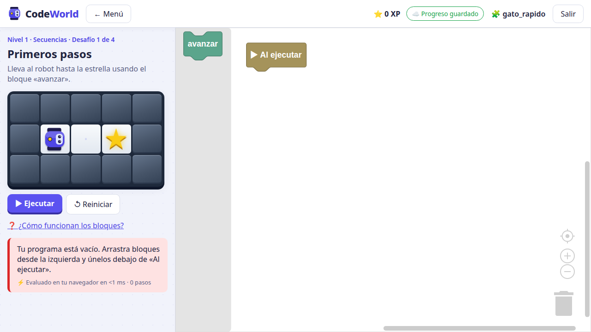
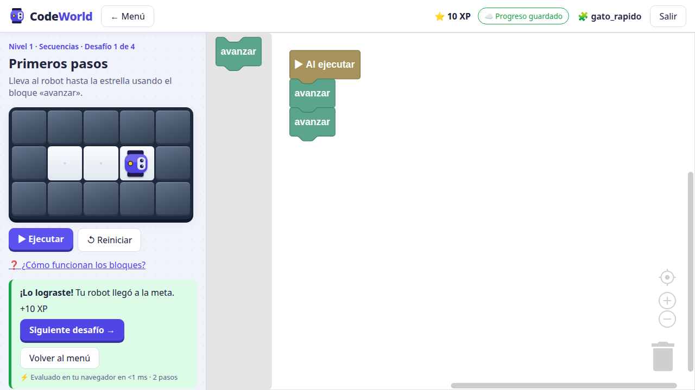
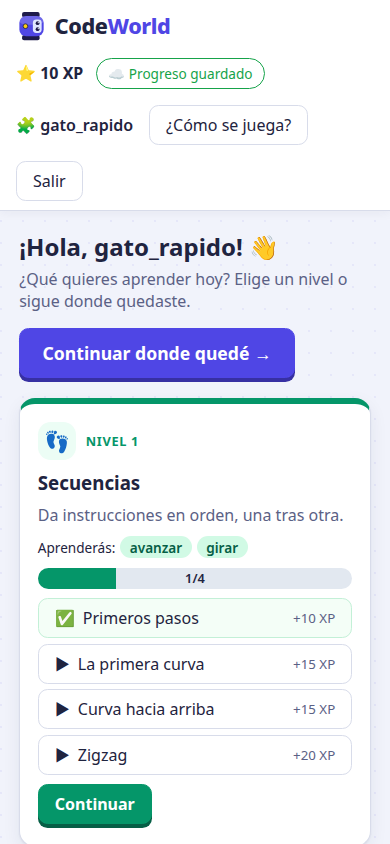

1. INTRODUCCIÓN
- Muchos jóvenes de 9 a 15 años abandonan la programación en sus primeras sesiones.
- Las herramientas asumen conocimientos previos, usan interfaces para adultos y, ante un error, solo dicen «incorrecto».
- Muchos colegios tienen equipos modestos y mala conexión, y no pueden usar plataformas que dependen del servidor.
¿Y si cada error fuera una pista?
2. OBJETIVOS
Objetivo general
Desarrollar y validar una plataforma web de programación con bloques visuales y retroalimentación inmediata, en la que al menos el 80% de un grupo de 10 jóvenes complete sin ayuda un ejercicio básico de lógica.
Objetivos específicos
OE1
Interfaz responsiva en español, con toda opción a 2 clics o menos.
OE2
Módulo de bloques con 3 niveles y 6 desafíos.
OE3
Guías para los 4 patrones de error, en 300 ms o menos.
OE4
Validación con 10 o más jóvenes: el 80% o más, sin ayuda.
3. METODOLOGÍA
Gestión: PMBOKAlcance, plazos, calidad y riesgos controlados por fases.
Desarrollo: Scrum + KanbanSprints con un tablero para el flujo de trabajo.
Análisisagosto
Diseñoago – sep
Construcciónsep – oct
Integraciónoctubre
Validaciónnoviembre
Técnicas: observación en terreno, revisión bibliográfica, diagrama de Ishikawa y objetivos SMART.
ReactGoogle BlocklyTypeScript
Node.js + ExpressPrismaPostgreSQL
VitestPlaywrightAutocannon
6. CONCLUSIONES
- Evaluar el programa en el navegador da respuesta inmediata y funciona sin internet en equipos modestos.
- Cada error se convierte en una pista según su patrón, en vez de un simple «incorrecto».
- Privacidad por diseño: el tutor registra al menor con datos mínimos (Ley N.° 19.628).
Proyección: medir el aprendizaje con pruebas antes y después, sumar desafíos y bloques de robótica, y llevarlo a colegios.
4. PROPUESTA: DIAGRAMA DE CONTEXTO



5. RESULTADOS
89/89
pruebas unitarias y de integración
15/15
casos de aceptación en 3 dispositivos
≤1 ms
retroalimentación (meta: 300 ms)
48/48
combinaciones de error y desafío con guía
OE3
Cumplido. Toda combinación de error tiene su guía, con CPU 6 veces más lenta.
OE2
Parcial. 12 desafíos operativos; falta probar en Safari y equipos reales.
OE1
Parcial. Todo a 2 clics o menos; falta medir el tiempo con alumnos.
OE4
Completar: X de N jóvenes (X%) completaron el ejercicio sin ayuda.